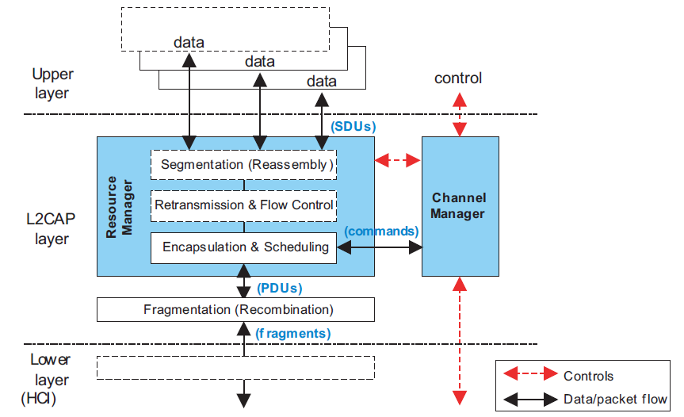
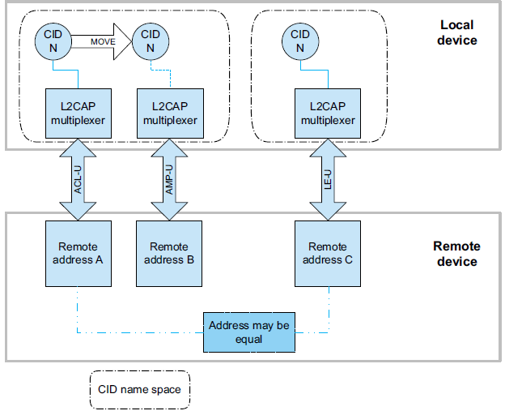
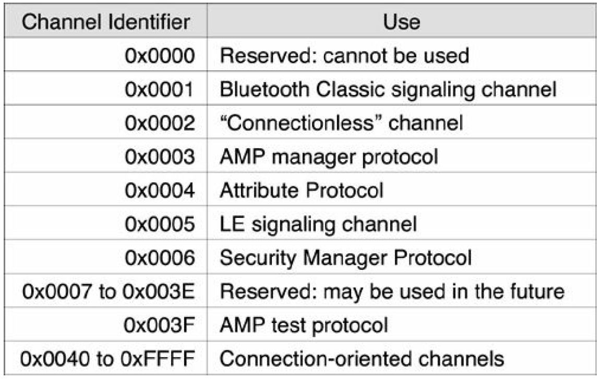
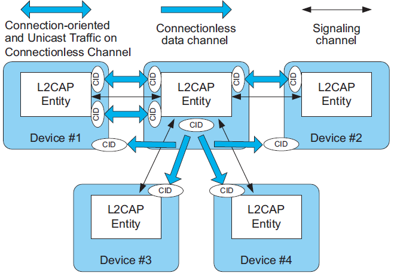
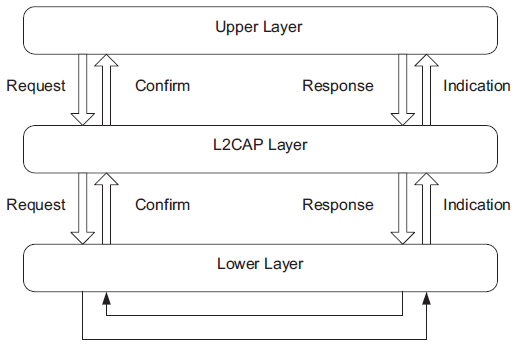
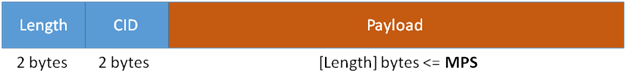
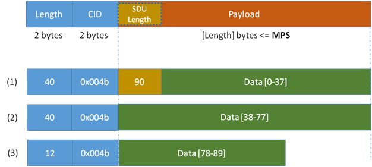
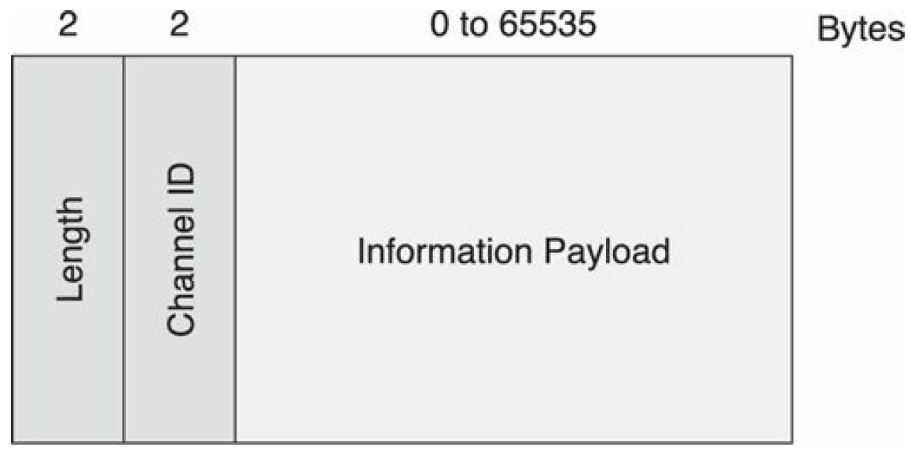
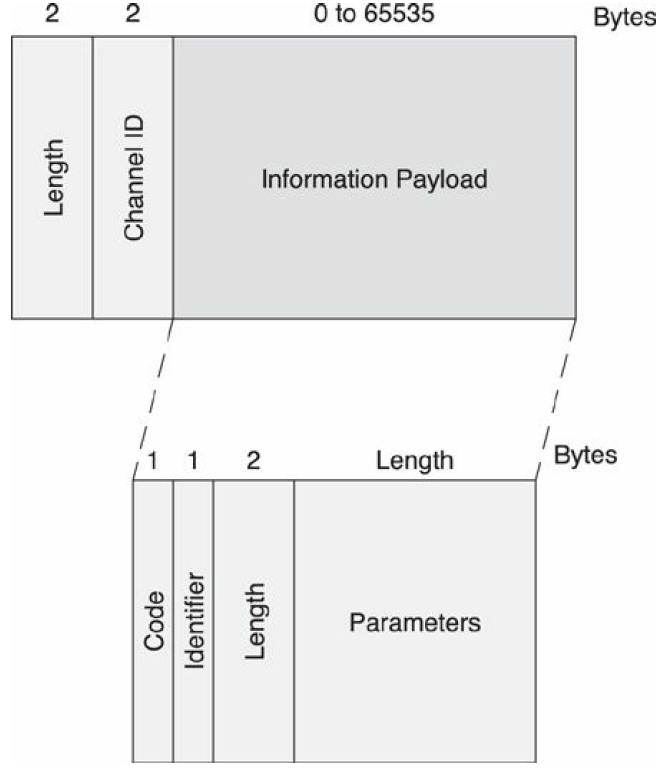

L2CAP协议学习
1 概述
The Bluetooth logical link control and adaptation protocol (L2CAP) supports higher level protocol multiplexing, packet segmentation and reassembly, and the conveying of quality of service information. The protocol state machine, packet format, and composition are described in this document.
2 INTRODUCTION
L2CAP provides connectionoriented and connectionless data services to upper layer protocols with protocol multiplexing capability and segmentation and reassembly operation.
Upper layer data packets (L2CAP Service Data Units, SDU) is up to 64 kilobytes in length.
L2CAP also permits per-channel flow control and retransmission.
The L2CAP layer provides logical channels, named L2CAP channels, which are multiplexed over one or more logical links.
2.1 L2CAP FEATURES

2.1.1 Protocol/channel multiplexing
An L2CAP channel shall operate over one Controller at a time. During channel setup, protocol multiplexing capability is used to route the connection to the correct upper layer protocol.
For data transfer, logical channel multiplexing is needed.
2.1.2 Segmentation and reassembly
This provides the following benefits:
- Segmentation will allow the interleaving of application data units in order to satisfy latency requirements.
- Memory and buffer management is easier when L2CAP controls the packet size.
- Error correction by retransmission can be made more efficient.
- The amount of data that is destroyed when an L2CAP PDU is corrupted or lost can be made smaller than the application's data unit.
- The application is decoupled from the segmentation required to map the application packets into the lower layer packets.
2.1.3 Flow control per L2CAP channel
Controllers provide error and flow control for data going over the air and HCI flow control exists for data going over an HCI transport. When several data streams run over the same Controller using separate L2CAP channels, each channel requires individual flow control. A window based flow control scheme is provided.
2.1.4 Error control and retransmissions
L2CAP provides error checks and retransmissions of L2CAP PDUs.
2.1.5 Support for Streaming
Streaming applications such as audio set up an L2CAP channel with an agreed-upon data rate。 don't use flow control mechanisms in L2CAP layer and below(HCI & Controller). A flush timeout is used to keep data flowing on the transmit side.
2.1.6 Fragmentation and Recombination
During transmission of an L2CAP PDU, many different levels of fragmentation and recombination may occur in both peer devices.
However the PDU is fragmented within the stack, the receiving L2CAP entity still recombines the fragments to obtain the original L2CAP PDU.
2.1.7 Quality of Service
The L2CAP connection establishment process allows the exchange of information regarding the quality of service (QoS) expected between two Bluetooth devices. Each L2CAP implementation monitors the resources used by the protocol and ensures that QoS contracts are honored.
2.2 ASSUMPTIONS
The protocol is designed based on the following assumptions:
- Controllers provide orderly delivery of data packets, although there might be individual packet corruption and duplicates.
- Controllers always provide the impression of full-duplex communication channels. This does not imply that all L2CAP communications are bidirectional. Unidirectional traffic does not require duplex channels.
- The L2CAP layer provides a channel with a degree of reliability based on the mechanisms available in Controllers and with additional packet segmentation, error detection, and retransmission that can be enabled in the enhanced L2CAP layer.
- Controllers provide error and flow control for data going over
the air and HCI flow control exists for data going over an HCI
transport. It has four modes to provide different level of flow
control requirements. The Flow and Error Control block provides four modes:
- Enhanced Retransmission mode offer segmentation, flow control and L2CAP PDU retransmissions.
- Retransmission Mode offer segmentation, flow control and L2CAP PDU retransmissions.
- Flow control mode offers just the segmentation and flow control functions.
- Streaming mode offers segmentation and receiver side packet flushing.
2.3 SCOPE
The following features are outside the scope of L2CAP’s responsibilities:
- L2CAP does not transport synchronous data designated for SCO or eSCO logical transports.
- L2CAP does not support a reliable broadcast channel.
3 GENERAL OPERATION
L2CAP is based around the concept of ’channels’. Each one of the endpoints of an L2CAP channel is referred to by a channel identifier (CID).

The AMP-U logical link shares the CID name space with its associated ACL-U logical link.
3.1 CHANNEL IDENTIFIERS
A channel is a single sequence of packets, from and to a single pair of services on a single device. Between two devices, there can be multiple channels active at the same time.
A channel identifier (CID) is the local name representing a logical channel endpoint on the device. The null identifier (0x0000) shall never be used as a destination endpoint. Identifiers from 0x0001 to 0x003F are reserved for specific L2CAP functions.At a minimum, the L2CAP Signaling channel (Fixed Channel 0x0001) or the L2CAP LE Signaling channel (Fixed Channel 0x0005) shall be supported. The Information Request / Response mechanism shall be used to determine which fixed channels a remote device supports over the ACL-U logical link.
The characteristics of each fixed channel are defined on a per channel basis. Fixed channel characteristics include configuration parameters (e.g., reliability, MTU size, QoS), security, and the ability to change parameters using the L2CAP configuration mechanism. Fixed channels shall only run over ACL-U, ASB-U, or LE-U logical links and shall not be moved.
In Bluetooth low energy, only fixed channels are supported. Fixed channels don’t have any configuration parameters to negotiate, and they exist as soon as the lower layers have established a connection; consequently, there is no time wasted waiting for the channel to be created. Only those fixed channels support connectionless model.
for the remaining CIDs, two simultaneously active L2CAP channels shall not share the same CID.

3.2 OPERATION BETWEEN DEVICES

There are also a number of CIDs reserved for special purposes.
| Channel Type | Local CID (sending) | Remote CID (receiving) |
|---|---|---|
| Connection-oriented | Dynamically allocated and fixed | Dynamically allocated and fixed |
| Connectionless data | 0x0002 (fixed) | 0x0002 (fixed) |
| L2CAP Signaling | 0x0001 and 0x0005 (fixed) | 0x0001 and 0x0005 (fixed) |
3.3 OPERATION BETWEEN LAYERS
L2CAP implementations transfer data between upper layer protocols and the lower layer protocol.any L2CAP implementation should:
- export a number of services
- support a set of signaling commands
- accept certain types of events from lower layers and generate events to upper layers.

3.4 MODES OF OPERATION
L2CAP channels may operate in one of five different modes as selected for each L2CAP channel.
The modes are:
- Basic L2CAP Mode (equivalent to L2CAP specification in Bluetooth
v1.1)
the default mode
- Flow Control Mode
- Retransmission Mode
- Enhanced Retransmission Mode
used for all reliable channels created over AMP-U logical links and for ACL-U logical links operation under some conditions.
- Streaming Mode
used for streaming applications created over AMP-U logical links and ACL-U logical links operating under some conditions.
- LE Credit Based Flow Control Mode
3.4.1 Bluetooth LE Credit-Based Flow Control for L2CAP Connection-Oriented Channels
- The theory
The L2CAP layer of the BLE Host Stack performs data multiplexing through the use of a Channel ID (CID), which is a 2-byte value contained by the L2CAP Basic Header, as seen in the general L2CAP packet format:

Several CIDs are reserved. For instance, 0x0004 is used by the ATT, 0x0006 by the SMP, 0x0005 is the Signaling Channel. The 0x0040-0x007F range is assigned for the Connection-Oriented Channels.
The LE Credit-Based Flow Control is an L2CAP mode of operation for Connection-Oriented Channels in which an endpoint device has complete control over how many packets the peer device may send at any time through the use of credits.
One credit represents the permission to send one LE-frame over the established channel. The receiving device gives a fixed number of credits to the sending device, so that the latter knows exactly how many LE-frames it may send. The attempt to send more frames than permitted results in the receiving device closing the channel.
An initial number of credits are given by each device to the peer when the connection is created. Subsequently, each device can give more credits as it deems necessary; if a device wants to send more data than it is allowed, there’s nothing it can do but wait until it receives more credits from the peer.
A Protocol Service Multiplexer must be associated with any credit-based connection. It is abbreviated as
LE_PSMand is a two-byte value identifying the protocol that uses the credit-based connection. The specification defined the ranges for allowedLE_PSMs; some are reserved by specific profiles (e.g. IPSP) and others may be dynamically used by custom application profiles. - The protocol
An LE Credit-Based connection is created and managed on the L2CAP Signaling Channel, with the following commands and parameters.
- LE Credit-Based Connection Request, with the parameters:
LE_PSM- Source Channel ID (SCID)
- Maximum Transmission Unit (MTU)
- Maximum Payload Size (MPS)
- Initial Credits
- LE Credit-Based Connection Response
- Destination CID (DCID)
- MTU
- MPS
- Initial Credits
- Result
- LE Flow Control Credit
- CID
- Credits
The requesting device must specify the LEPSM for which the connection is opened, the CID to which the responder will send data (SCID), the supported MTU and MPS and the initial number of credits given to the responder.
In turn, the responding device can reject the request (reason is found in the Result parameter) or can accept it (Result is 0) and also provide the CID where the requesting device can send data (DCID), initial credits for this CID and its own MTU and MPS.
The minimum values between the two devices’ MTU and MPS are used. MTU is the maximum transmission unit, i.e. the maximum size of data (an SDU – Service Data Unit) to be transmitted. MPS is the maximum payload size, i.e. the maximum size of a single L2CAP packet, which is an LE-frame and “eats” one credit when is transmitted.
At any moment, any of the two devices can send a Flow Control Credit command to increase the credits of the peer on the given CID.
- LE Credit-Based Connection Request, with the parameters:
- The data packets - example
Let’s assume device A sends an LE Credit-Based Connection Request with:
LE_PSM= 0x0080- SCID = 0x004a
- MTU = 100
- MPS = 40
- I.C. = 5
Device B answers with an LE Credit-Based Connection Response:
- DCID = 0x004b
- MTU =260
- MPS = 60
- I.C. = 10
So MTU becomes 100 and MPS becomes 40. This means that a device can send SDUs of maximum 100 bytes, but these 100 bytes will be fragmented to fit into LE-frames of maximum 40 bytes payload.
An LE-frame contains:
- The basic L2CAP header: Length (2 bytes) and CID (2 bytes)
- Payload (length maximum equal to MPS)
When a large SDU is sent, the first LE-frame Payload starts with 2 bytes of SDU Length then follow the first MPS-2 bytes of SDU. Subsequent LE-frames each contain MPS bytes of SDU, while the last one may contain less than MPS bytes.
If device A from our example wants to send an SDU of 90 bytes, it would need 3 credits because the 90 bytes can be split in 3 LE-frames:

3.5 MAPPING CHANNELS TO LOGICAL LINKS
L2CAP maps channels to Controller logical links, which in turn run over Controller physical links. All logical links going between a local Controller and remote Controller run over a single physical link.There is one ACL-U logical link per BR/EDR physical link and one LE-U logical link per LE physical link, while there may be multiple AMP-U logical links per AMP physical link.
All Best Effort and Guaranteed channels going over a BR/EDR physical link between two devices shall be mapped to a single ACL-U logical link. All Best Effort channels going over an AMP physical link between two Controllers shall be mapped to a single AMP-U logical link while each Guaranteed channel going between two Controllers shall be mapped to its own AMP-U logical link with one AMP-U logical link per Guaranteed channel. All channels going over an LE physical link between two devices shall be treated as best effort and mapped to a single LE-U logical link.
4 BLE L2CAP
4.1 L2CAP Channels
There are three Bluetooth low energy channels: Channel identifier 0x0004 is used for the Attribute Protocol, Channel identifier 0x0005 is used for the Bluetooth low energy signaling channel; Channel identifier 0x0006 is used for the Security Manager. All the other channel identifiers from 0x0007 to 0x003E are reserved, and channel identifiers from 0x0040 to 0xFFFF can be used for connection-oriented channels.
4.2 The L2CAP Packet Structure
Each L2CAP packet contains a 32-bit header followed by its payload. It is assumed that segmentation and reassembly is used; thus, the length of the packet must be included in the packet header so that the end of the packet can be determined. The segmentation and reassembly scheme used requires the marking of packets over the HCI interface. There is no way to denote that a given L2CAP packet segment is the end of the current packet. This means that the only way to determine if the current packet is complete is to either send a new packet, assuming that one is ready to be sent, or to include the packet length in the very first packet sent.

For all Bluetooth Low Energy channels, the information payload starts with a Maximum Transmission Units(MTU) size of 23 bytes. So the Bluetooth Low Engergy devices must support a total Length of 27 bytes data.(4 + 23)
4.3 The LE Signaling Channel
The LE Signaling channel is used for Signaling at host layer. as illustrated in the following figure, each LE Signaling packet contains a single opcode, followed by any parameters. The following command opcodes are supported on the LE Signaling channel:
- Command Reject
- Connection Parameter Update Request
- Connection Parameter Update Response

Whenever a signaling command is sent, an identifier is included in the information payload. This identifier is just 1 byte in length and is used to match responses with requests.Identifiers can’t be reused unless all other identifiers have been used. This leads implementations to use an increment operation to ensure this rule is met. indentifier 0x0 is never used.
In Bluetooth low energy, because only one request has been defined, and because this request can only be sent when no other request is outstanding, the logic for identifiers is very simple.